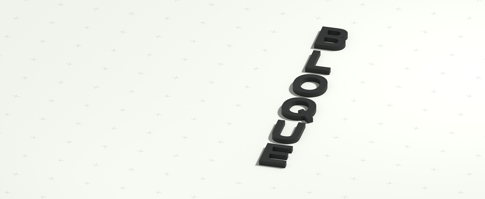

Meer rendementuit bestaandvastgoed
BLOQUE vastgoed
ontwikkelt, splitst en transformeert bestaand vastgoed
Ontdek


Onze visie
Nederland verandert. Hoe we wonen, werken en ruimte gebruiken vraagt om een nieuwe blik op bestaand vastgoed. Voor eigenaren en beleggers ontstaan daarmee nieuwe uitdagingen én kansen. BLOQUE maakt die kansen concreet. Met splitsing, transformatie, renovatie en herpositionering geven we gebouwen een nieuwe toekomst. We verbinden visie met een heldere businesscase en voeren de regie van eerste analyse tot realisatie. Zo vertalen we de mogelijkheden van uw vastgoed naar plekken waar mensen willen wonen en waarde waarop u verder kunt bouwen. Samen halen we meer uit wat er al staat.
Bekijk ons aanbod
Ons aanbod
Elk pand vraagt om andere keuzes. Soms zit de winst in een slimmere indeling, soms in een andere functie of een gerichte kwaliteitsverbetering. Wij bepalen welke ingreep past bij uw ambities en het gebouw. Onze vier specialismen zetten we afzonderlijk of gecombineerd in, afgestemd op wat uw vastgoed nodig heeft.
01
Splitsen
Meer mogelijkheden binnen één pand.
BLOQUE begeleidt de bouwkundige en juridische splitsing van bestaand vastgoed naar zelfstandige eenheden. We onderzoeken wat haalbaar is en vertalen dit naar een plan voor afzonderlijke verhuur of verkoop, met oog voor woonkwaliteit, kosten en rendement.
02
Transformeren
Een nieuwe functie. Een nieuwe toekomst.
BLOQUE geeft kantoor-, winkel- en zorgvastgoed een nieuwe bestemming als woonruimte. We brengen marktvraag, bouwkundige mogelijkheden en financiële haalbaarheid samen en begeleiden het traject van eerste verkenning tot realisatie.
03
Renoveren
Verbeteren wat er staat.
BLOQUE renoveert bestaand vastgoed met aandacht voor comfort, uitstraling en energieprestaties. Van een nieuwe indeling tot een complete modernisering: we richten de investering op verbeteringen die bijdragen aan de kwaliteit en marktwaarde van het pand.
04
Herpositioneren
Een scherpere koers voor uw vastgoed.
BLOQUE ontwikkelt een nieuwe marktstrategie voor vastgoed waarvan de mogelijkheden onvoldoende worden benut. We bepalen welke doelgroep, invulling en uitstraling bij het pand passen en vertalen dit naar concrete verbeteringen en een gerichte verhuur- of verkoopaanpak.
Onze werkwijze
Zes stappen. Regie van aankoop tot afronding.
Een succesvol vastgoedproject begint met inzicht en vraagt om samenhang. BLOQUE verbindt analyse, ontwerp, vergunningen en uitvoering in één aanpak. In elke fase houden we zicht op haalbaarheid, kosten en het beoogde rendement.


Testimonials
Let's work together

Interested in collaborating with us? Get in touch with Jan Schulz-Berners—he’s happy to discuss how we can create something great together.

Working at KRAVT
"Die Stärke von KRAVT liegt im Team. Wir helfen uns gegenseitig und lösen so jedes Problem."
Working at KRAVT since 2016
"Die Stärke von KRAVT liegt im Team. Wir helfen uns gegenseitig und lösen so jedes Problem."
Working at KRAVT since 2016
"Die Stärke von KRAVT liegt im Team. Wir helfen uns gegenseitig und lösen so jedes Problem."
Working at KRAVT since 2016
"Die Stärke von KRAVT liegt im Team. Wir helfen uns gegenseitig und lösen so jedes Problem."
Working at KRAVT since 2016
Bis bald!